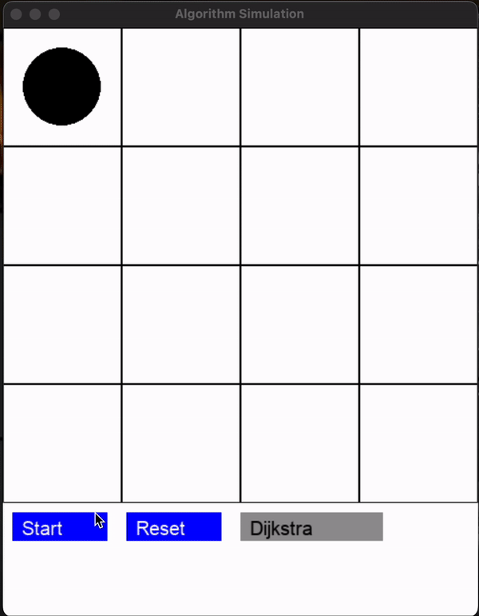

Table of Contents
Process
Sprint 1
Our goal was to build a proof of concept with:
- A functional grid system.
- A Dijkstra agent that:
- Prioritizes green reward blocks.
- Avoids red punishment blocks.
- Testing Pygame as the main library.
- Early progress on the Q-Learning agent.
- Teaching users the difference between Dijkstra’s Algorithm and Q-Learning.

Challenges and Design Decisions
1. External Libraries vs. Customizability
- Why: Existing libraries (e.g., Gym) ran in their own environments and were hard to customize.
- Decision: Full control over sprites and mechanics for flexibility.
Pivot: Develop modular tools to speed up development without losing control.
2. Teaching Dijkstra vs. Q-Learning
- Challenge: The two algorithms are too different for straightforward comparison.
- Struggle: Aligning gameplay and storyline to highlight their unique applications.
Pivot: Refocus the storyline to show how each algorithm solves unique problems instead of directly comparing them.
3. Mechanics Development
- Issue: Without external libraries, we’re spending significant time on foundational mechanics.
Pivot: Use lightweight tools (e.g., GUI libraries) to improve efficiency without losing control.
4. Playtesting Barriers
- Problem: The game feels too technical for players without RL knowledge.
Pivot:
- Add visual aids (e.g., overlays, step-by-step explanations) to teach key mechanics.
- Simplify early levels for intuitive gameplay.
5. Grid Size and Performance
- Challenge: Larger grids stress GPU/CPU resources and increase training time.
- Why not pre-train?: Real-time, dynamic training is a key feature.
Pivot:
- Start with smaller grids and scale gradually.
- Optimize Q-Learning to reduce computational overhead.
6. Storyline Integration
- Issue: Tying gameplay, RL mechanics, and a compelling storyline is difficult.
Pivot: Simplify the narrative to focus on goal-driven challenges where each algorithm’s strengths shine.
Sprint 2
For Sprint 2, we focused on graphics, gameplay tweaks, and building an MVP styled as an old arcade game.
1. Q-Learning Enhancements
- Fully functional Q-Learning sprite.
- Real-time Q-Table Visualization for intuitive learning feedback.
2. User Interface
- Functional Home Page and two Instruction Screens:
- Simple gameplay explanation.
- Overview of Dijkstra’s Algorithm and Q-Learning.
- Added a Credits Screen with consistent styling.
3. Gameplay Feedback
- On-screen messages show:
- Current step of the Q-Learning sprite.
- Progress out of 5000 max steps.
4. Visual Updates
- Adjusted to a horizontal layout for arcade monitor compatibility.
- Limited controls to 6 buttons for simplicity.
5. Scrolling Text
- Standardized scrolling text animations with a base class.
6. Leaderboard Screen
- Added a non-functional leaderboard screen (debugging in progress).
7. Explanation Screen
- Added screens to explain sprite oscillation and invalid moves during Q-Learning.
Challenges and Potential Pivots
1. Storyline Development
- Issue: We still struggle to develop a cohesive storyline.
Pivot:
- Use the Dijkstra sprite as a tutorial to introduce mechanics.
- Simplify the narrative into progression-based challenges.
2. Q-Table Display
- Issue: Q-Table numbers overlap, creating clutter.
Fix:
- Tweak reward/punishment values.
- Round displayed Q-table numbers for clarity.
3. Leaderboard Issues
- Issue: Leaderboard functionality is incomplete.
Fix: Debug and finalize leaderboard tracking for high scores.
4. Max Steps Taking Too Long
- Issue: 5000 steps feel excessive and slow down gameplay.
Pivot:
- Allow users to adjust step sizes (e.g., 100, 500, 1000).
- Streamline gameplay to reduce unnecessary steps.
5. Gameplay Consistency
- Issue: The game doesn’t always behave as expected.
Fix:
- Perform a parameter sweep to balance rewards, punishments, and grid size.
- Ensure consistent gameplay that’s challenging but winnable.
Narrative Ideations
In Sprint 2, we explored potential storylines to align gameplay with engaging narratives.
1. Car Game
- Concept: A car loses gas with each step.
- Red squares: Obstacles increasing gas loss.
- Green squares: Gas stations for refueling.
Fix:
- Dijkstra: Efficient route to gas stations.
- Q-Learning: Adaptive navigation to avoid obstacles.
2. Park Game
- Concept: Park-goers navigate delays and rewards.
- Red squares: Monuments or benches.
- Green squares: Fields requiring maintenance.
Fix:
- Dijkstra: Optimized static pathfinding.
- Q-Learning: Adapts dynamically to new obstacles.
3. Immigrant Boat Game
- Concept: Escape threats while maintaining morale.
- Green squares: Safe havens.
- Red squares: Pirates reducing morale.
Fix:
- Dijkstra: Safest, most optimal path.
- Q-Learning: Learns dynamically to avoid threats.

Next Steps
- Select and integrate a streamlined narrative.
- Align rewards and punishments with storyline progression.
- Optimize mechanics to balance user engagement and educational value.
Here’s Sprint 3 formatted cleanly and consistently with your earlier sections:
Sprint 3
Narrative Ideation
We settled on a storyline where baby turtles must find their way to the ocean after hatching. The game aims to:
- Educate users on reinforcement learning algorithms.
- Teach users about the natural behavior of turtle hatchlings.
- Spread awareness on the issue of light pollution and its impact on nature.
Final Updates
- Sprite images added!
- Storyline integrated into the gameplay.
- Bugs fixed to improve robustness.
- Option to choose max steps added for better gameplay flexibility.
- File reorganization completed to prepare for a downloadable app.
Challenges and Pivots
At this stage, the primary focus is on:
Pivot: Finishing the final touches and fixing all remaining bugs to ensure the game is robust and ready for release.